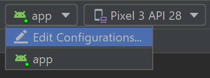
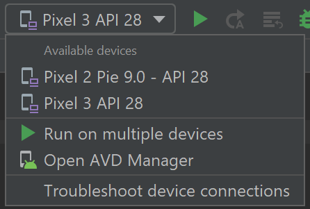
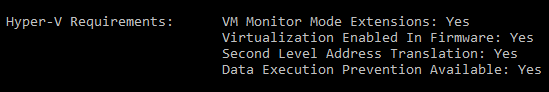

Test on an Android device or emulator
There are several ways to test and debug your Android application using a real device or emulator on your Windows machine. We have outlined a few recommendations in this guide.
Run on a real Android device
To run your app on a real Android device, you will first need to enable your Android device for development. Developer options on Android have been hidden by default since version 4.2 and enabling them can vary based on the Android version.
Enable your device for development
For a device running a recent version of Android 9.0+:
- Connect your device to your Windows development machine with a USB cable. You may receive a notification to install a USB driver.
- Open the Settings screen on your Android device.
- Select About phone.
- Scroll to the bottom and tap Build number seven times, until You are now a developer! is visible.
- Return to the previous screen, select System.
- Select Advanced, scroll to the bottom, and tap Developer options.
- In the Developer options window, scroll down to find and enable USB debugging.
Run your app on the device
In the Android Studio toolbar, select your app from the run configurations drop-down menu.

From the target device drop-down menu, select the device that you want to run your app on.

Select Run ▷. This will launch the app on your connected device.
Run your app on a virtual Android device using an emulator
The first thing to know about running an Android emulator on your Windows machine is that regardless of your IDE (Android Studio, Visual Studio, etc), emulator performance is vastly improved by enabling virtualization support.
Enable virtualization support
Before creating a virtual device with the Android emulator, it is recommended that you enable virtualization by turning on the Hyper-V and Windows Hypervisor Platform (WHPX) features. This will allow your computer's processor to significantly improve the execution speed of the emulator.
To run Hyper-V and Windows Hypervisor Platform, your computer must:
- Have 4GB of memory available
- Have a 64-bit Intel processor or AMD Ryzen CPU with Second Level Address Translation (SLAT)
- Be running Windows 10 build 1803+ (Check your build #)
- Have updated graphics drivers (Device Manager > Display adapters > Update driver)
If your machine doesn't fit this criteria, you may be able to run Intel HAXM or AMD Hypervisor. For more info, see the Android Studio Emulator documentation.
Verify that your computer hardware and software is compatible with Hyper-V by opening a command prompt and entering the command:
systeminfo
In the Windows search box (lower left), enter "windows features". Select Turn Windows features on or off from the search results.
Once the Windows Features list appears, scroll to find Hyper-V (includes both Management Tools and Platform) and Windows Hypervisor Platform, ensure that the box is checked to enable both, then select OK.
Restart your computer when prompted.
Emulator for native development with Android Studio
When building and testing a native Android app, we recommend using Android Studio. Once your app is ready for testing, you can build and run your app by:
In the Android Studio toolbar, select your app from the run configurations drop-down menu.
From the target device drop-down menu, select the device that you want to run your app on.
Select Run ▷. This will launch the Android Emulator.
Tip
Once your app is installed on the emulator device, you can use Apply Changes to deploy certain code and resource changes without building a new APK. See the Android developer guide for more information.
Emulator for cross-platform development with Visual Studio
There are many Android emulator options available for Windows PCs. We recommend using the Google Android emulator, as it offers access to the latest Android OS images and Google Play services.
Android emulator with Visual Studio
Learn more about using the latest version of Visual Studio for Android Development. Open the latest version of Visual Studio, create a new C++ Android project, set the platform configuration, run the project, and the default Android Emulator will appear. It is recommended to use the .NET Multi-platform App UI (MAUI) development workload. You may need to use the Visual Studio Installer to Modify your workloads.